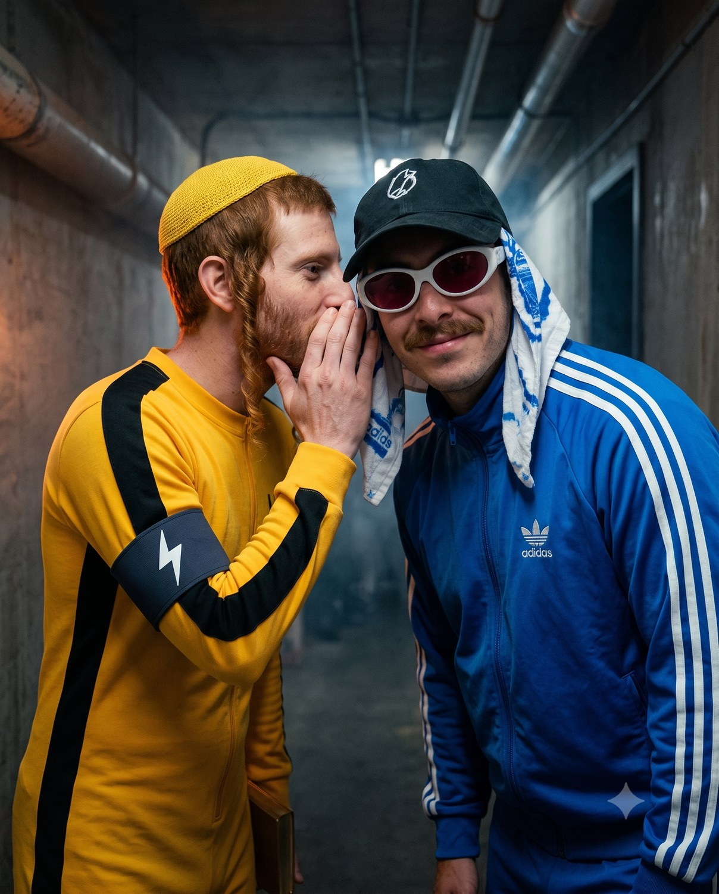
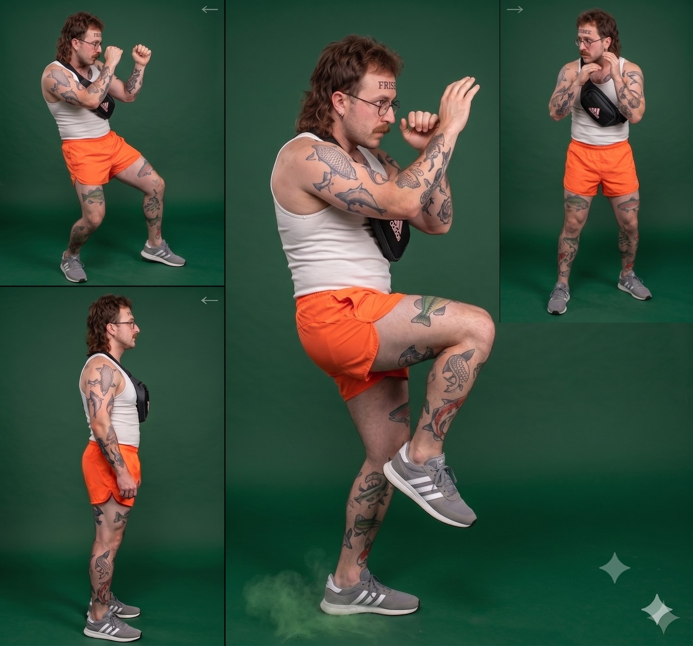
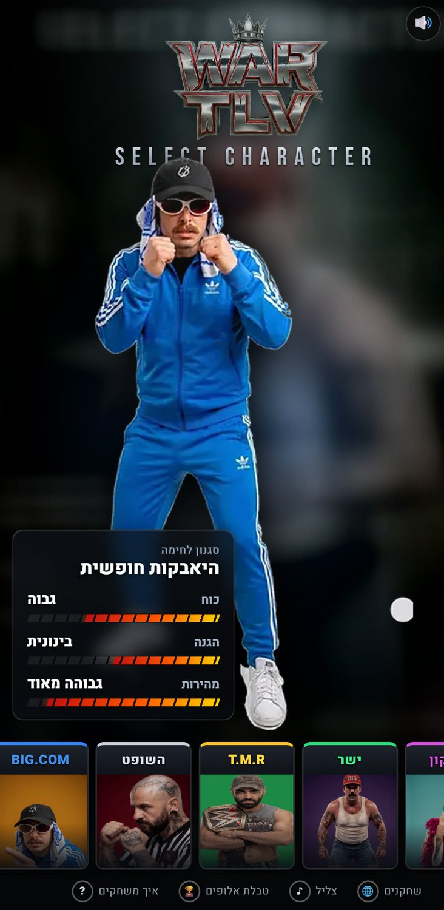
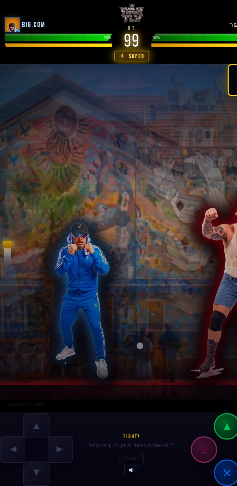
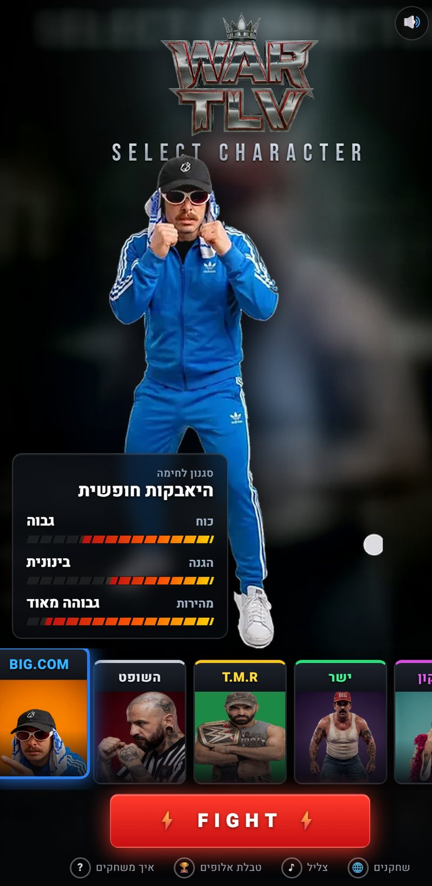
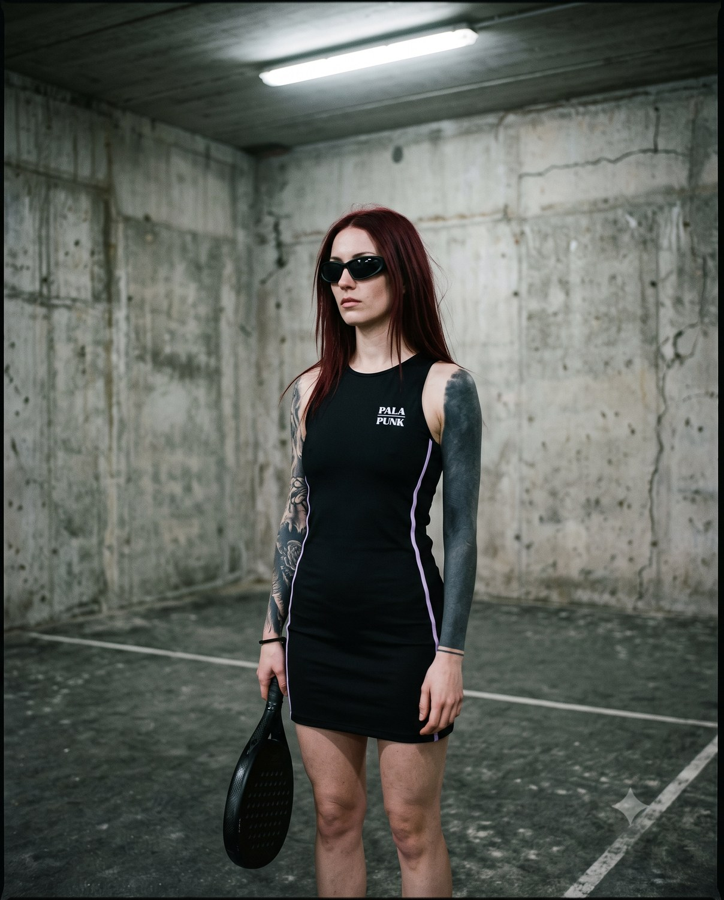
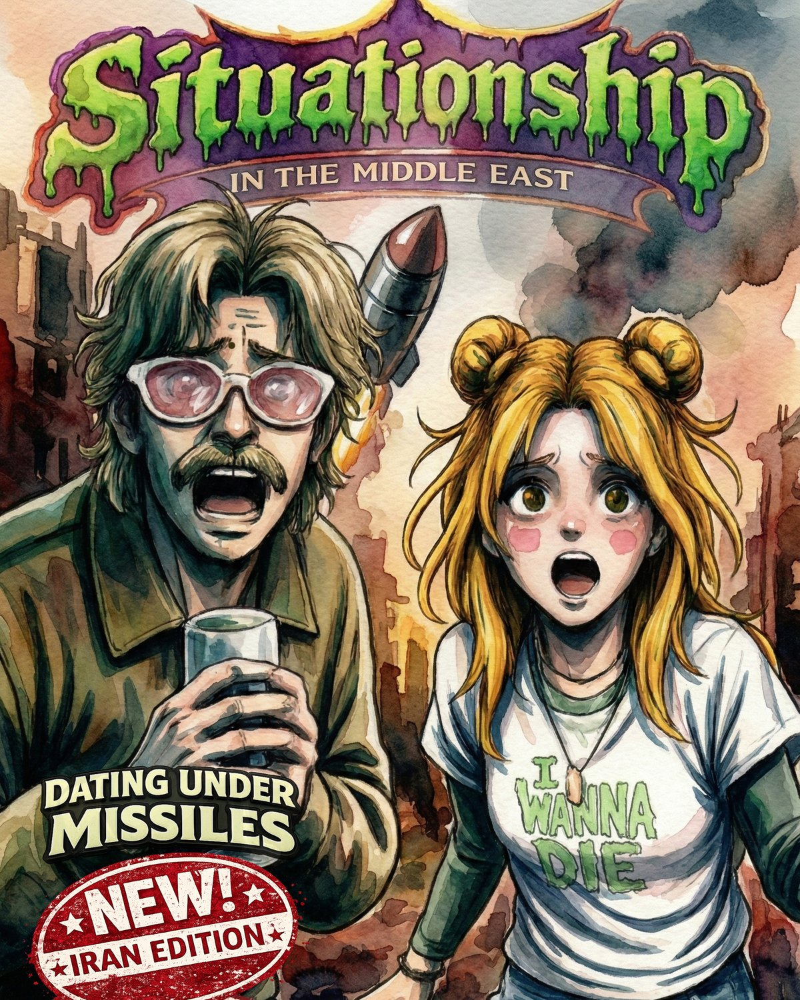
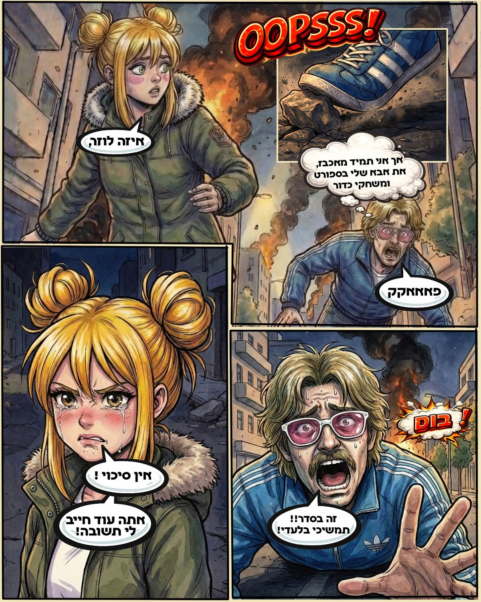

הכל מתחיל באיפיון. כל דמות מקבלת זהות נעולה — מראה קבוע, פרסונה, שפת גוף ואטיטיוד — שנשמרת זהה על פני תמונות וסרטונים דרך תיאור מדויק ותמונת רפרנס. הבסיס הוא הניגוד הקיצוני: עולם הלילה התל־אביבי הקר נדחף אל המכונה הצבעונית של ההיאבקות. זו לא הרמוניה — זו התנגשות מכוונת.
משם אני בונה את הסצנה. כל כניסה לזירה, כל קרב וכל פרומו מתוכננים כרגע: זווית מצלמה, קהל, פירוטכניקה ודיאלוג בעברית שמופק ב-VEO3. אני מאפיין, מביים ומדייק עד שהסרטון לא נראה כפלט אוטומטי אלא כרגע של מיתולוגיה. VEO3 הוא לא המכחול שלי; הוא השותף שלי לפשע.
מה שמיוצר כאן הוא הוכחת שליטה: שימוש מדויק ב-AI כדי לייצר סרטוני מיתוג שהם קונספט — לא קליפ יפה, אלא וידאו שמוכר עולם, דמות ורעיון.
It all starts with characterization. Every character gets a locked identity — a fixed look, a persona, body language and attitude — kept identical across stills and video through a precise description and a reference image. The foundation is extreme contrast: cold Tel Aviv nightlife pushed into the colorful machine of pro wrestling. Not harmony — a deliberate collision.
From there I build the scene. Every ring entrance, every fight, every promo is designed as a moment: camera angle, crowd, pyrotechnics, and Hebrew dialogue generated in VEO3. I characterize, direct and refine until the video reads not as an automatic output but as a moment of mythology. VEO3 is not my brush; it is my partner in crime.
What is produced here is a proof of command: precise use of AI to create branding videos that are concept — not a pretty clip, but a video that sells a world, a character and an idea.
דמות AI עקבית — פרזנטור או מסקוט עם פרסונה נעולה, שמדבר עברית ומופיע בכל קמפיין באותה זהות בדיוק.



WAR TLV הוא BIG.COM כשהקהל מחזיק בשלט. לקחתי את יקום הדמויות והפכתי אותו למשחק לחימה אמיתי שרץ בדפדפן ובנייד — כי זהות מוגזמת לא נועדה רק לצפייה, אלא להשתתפות. אתם לא צופים בזה בזמן שאתם גוללים בשירותים — אתם מי שמחליט מי המנצח.
כל לוחם הוא מותג: שם, צבע, שיר כניסה וטקס. בניתי את המנוע מאפס — מצלמה דינמית, רקע גרפיטי חי, מד "סופר" ומערכת הגנה אקטיבית בתזמון — כדי שהמיתולוגיה תהיה משהו שמשחקים בו, לא רק צופים בו.
זה הניסיון למתוח את הפופ החדש עד הקצה: להפוך את הקהל מצופה למשתתף. וזו הדרך הטובה ביותר להכניס אנשים אל תוך המותג — כשאתה משחק בדמות, אתה כבר חלק ממנה.
WAR TLV is BIG.COM with the audience holding the controller. I turned the universe of characters into a real fighting game running in the browser and on mobile — because an exaggerated identity isn't meant only to be watched, but to be played. You're not watching this while scrolling on the toilet — you're the one who decides who wins.
Every fighter is a brand: name, color, entrance theme and ritual. I built the engine from scratch — dynamic camera, a living graffiti backdrop, a "super" meter and a timing-based active-defence system — so the mythology becomes something you play, not just watch.
This is the attempt to push the new pop as far as it goes: turning the audience from viewers into participants. And it's the best way to pull people into the brand — once you play a character, you're already part of it.
חוויה אינטראקטיבית ממותגת — משחק או מנגנון שמעביר את הקהל מצפייה להשתתפות, ומכניס אותו אל תוך המותג.
PALA PUNK הוא ניסיון ליצור בידול חזק בין המיתוג הלבן והמוקפד של הטניס לבין הנראות של הפאדל — ספורט חדש שהזהות שלו עדיין נבנית. הפרצה הזו אפשרה לי לקחת סגנון שמתאים לחיי הלילה — מסיבות, קלאבים וכל הלייפסטייל שמתחת למטריית הוולנס.
יש אנשים שחיי הלילה הם חלק נורמלי מהחיים — לרוב אנשי הייטק — וההיגיון שלהם הוא לחבר את הספורט לאופי המחתרתי שלהם. הלכתי עם זה רחוק: בחרתי דוגמנית ייצוגית, שרירית, אפילו טיפה גברית, כדי להראות את הליברליות שבאה עם חיי הלילה — חלק מהערכים של המותג.
העיצוב מושפע מתרבות רחוב במינימליזם של חיי הלילה — לכן הוא גדול וחד. שחור מָאט מוחלט, פס לילך דק כדיוק היחיד, וספל מאצ'ה כצבע החם היחיד בפריים. לא מותג שצועק; מותג שיודע.
PALA PUNK is an attempt to draw a sharp line between the white, meticulous branding of tennis and the look of padel — a new sport whose identity is still being formed. That opening let me take a style that belongs to nightlife — parties, clubs, and the whole lifestyle under the wellness umbrella.
For some people nightlife is a normal part of life — often in hi-tech — and it makes perfect sense to connect the sport with their underground character. I pushed it far: I cast a model who is striking, muscular, even slightly masculine, to show the liberalism that comes with nightlife — part of the brand's values.
The design is street culture in the minimalism of nightlife — so it is big and sharp. Absolute matte black, a single thin lilac stripe, a matcha cup as the only warm color in frame. Not a brand that shouts; a brand that knows.
זהות שלמה מתוך טענה אחת — שפה ויזואלית חדה שמבדלת אותך מכל מי שנראה כמו כולם.

המשימה כאן לא הייתה פשוטה — להלביש את "מבוכים ודרקונים" שחור ולשלוח אותו למסיבה, בלי שירגיש מחופש. כמו בכל הסגנון שלי, אני בא מעולם של שילובי תרבויות — אז התחלתי לשלב את עולם הפנטזיה בעולם הקלאב, עם איפיון שמכניס את הסממנים התרסותיים של שני העולמות ל-DNA אחד אחיד.
פנטזיה ו-AI הם זיווג מתבקש — אבל גם עולם הלילה המטושטש מתאים ל-AI בצורה מדהימה: גרֵין, ערפל, ניאון, פרצופים שצפים בין אמיתי לדמיוני. הניגוד בין דמות פנטזיה משכנעת לבין הסביבה הסינתטית הוא בדיוק מה שמייצר את הקסם.
לכן בחרתי לא לטשטש את גבולות ה-AI אלא להציג אותו בפרונט: המלאכותיות היא לא משהו להסתיר — היא הסגנון. אימנתי DNA ויזואלי שלם (פילם-80s, פלטה, גימור) כדי שכל פרק ייראה כמו אותה יד.
The mission here was anything but simple — to dress Dungeons & Dragons in black and send it to a party, without it feeling like a costume. As in all of my style, I come from a world of culture-mixing — so I began fusing the fantasy world with the club world, with a characterization that folds the defiant signifiers of both worlds into one unified DNA.
Fantasy and AI are a natural pairing — but the blurry world of nightlife suits AI astonishingly well too: grain, haze, neon, faces that float between the real and the imagined. The contrast between a convincing fantasy character and the synthetic environment is exactly what creates the magic.
So I chose not to blur the boundaries of the AI but to put it front and center: the artificiality is not something to hide — it is the style. I trained a full visual DNA (80s-film, palette, finish) so every episode looks like the same hand.
סדרת תוכן עם סגנון חתום — פורמט אנכי ויראלי ו-DNA ויזואלי אחד, פרק אחרי פרק שנראה כמו אותה יד.


אני חנון קומיקס מושבע, וכאן יצאתי למתוח את גבולות הפורמט. עבדתי בטכניקת מיקס־מדיה שמשלבת סגנונות וטכניקות שונים — מעבר בין דימויים בסגנון קומיקס קלאסי מאויר לבין וידאו במגוון סגנונות. זה מה שמזריק את הפאנק־רוק אל תוך האיור הקלאסי.
הקומיקס נולד בתוך המלחמה השנייה מול איראן. כמה ימים לתוכה נפל טיל בליסטי במרכז תל אביב, כ-400 מטר מאיתנו — ראינו ממש את רגע הפגיעה. השילוב של מלחמה ושל התחלה חדשה של זוגיות, בשלב שעוד לא קראנו לו "זוגיות", יצר רגע מיוחד. הקומיקס היה הדרך שלי לעכל ולתפוס את הרגעים שעברנו יחד במציאות המזרח־תיכונית שלנו. השם הוא לא בדיחה — זו הייתה המציאות.
כלי ה-AI מאפשרים ליוצרים כמוני לתפוס רגעים עכשוויים במהירות — כך שמההתחלה ועד הסוף הרגע עדיין כאן והעבודה עדיין רלוונטית. זו הנקודה: לא רק לאייר, אלא לעצור את ההווה לפני שהוא חולף.
I'm a sworn comics nerd, and here I set out to stretch the format. I worked in a mixed-media technique that fuses different styles and techniques — moving between classic illustrated comic panels and video in a range of styles. That's what injects punk rock into the classic illustration.
The comic was born inside the second war with Iran. A few days in, a ballistic missile fell in central Tel Aviv, about 400 meters from us — we saw the moment of impact itself. The collision of war and the beginning of a relationship — at a stage we hadn't yet called "a relationship" — created a singular moment. The comic was my way to process and hold what we lived through together in our Middle Eastern reality. The title is not a joke — it was the reality.
AI tools let creators like me capture present-tense moments fast — so from start to finish the moment is still here and the work is still relevant. That's the point: not just to illustrate, but to freeze the present before it passes.
IP מאויר שקם לחיים — דמות מקורית ועקבית לספר, לסדרה או כמסקוט, בסטילס ובווידאו מדבר.
אטרו הוא בית קפה שכונתי בתל אביב — וגם הרבה יותר מזה. ביום קפה, בערב יין, ובאמצע עולם אלטרנטיבי שמנורמל לתוך השכונה: CBD ושמן פטריות לצד בקבוקי היין, בית מרקחת קנאביס מורשה כשכן. האתגר לא היה לעצב — אלא להגדיר. לא פארמה, לא בר — המשהו שביניהם, שמרוויח דווקא מזה שאי אפשר להדביק לו תווית.
זה הפרויקט שנבנה הכי הרבה דרך חשיבה עם AI, והיחיד כאן כמעט בלי נראות בכלל. לא ייצרתי דימויים — הגדרתי, פתרתי ופיתחתי מערכת שלמה: מיצוב, ארכיטקטורה, חדשנות מוצר שהיא בעצמה הבידול, כוריאוגרפיה של מסע לקוח, תת־מותג תוכן, היגיון קמעונאי, מודל תפעול ושפת מותג — הכל ב-Brand Bible בן 17 פרקים.
כאן הערך הוא לא תמונה אלא תשתית: חוקים, מערכות ושפה שאפשר לפתוח לפיהם עסק אמיתי. זו ההוכחה ש-AI הוא לא רק כלי ויזואלי — הוא שותף לחשיבה אסטרטגית עמוקה.
ATRO is a neighborhood café in Tel Aviv — and far more than that. Coffee by day, wine by night, and in between an alternative world normalized into the neighborhood: CBD and mushroom oil beside the wine bottles, a licensed cannabis pharmacy as our neighbor. The challenge wasn't to design — it was to define. Not a pharmacy, not a bar — the thing in between, that profits precisely from being impossible to label.
This is the project built most through thinking with AI, and the only one here with almost no visuals at all. I didn't generate images — I defined, solved and developed a complete system: positioning, architecture, product innovation that is itself the differentiation, a customer-journey choreography, a content sub-brand, retail logic, an operating model and a brand voice — all in a 17-chapter Brand Bible.
Here the value is not an image but an infrastructure: rules, systems and language a real business can open and run by. This is the proof that AI is not only a visual tool — it is a partner in deep strategic thinking.
רגוע, שכונתי, בטוח בעצמו. לא מסביר את עצמו יותר מדי — פשוט כאן. "Neighborhood Spirit, Alternative Soul."
שייכות ("Just Stay"), נרמול האלטרנטיב בלי להטיף, אוצרות על פני מלאי, וקצב איטי — אי של שקט אורבני.
שכנים, אנשי הייטק, יוצרים וקהילת ORTA — מי שמחפש "מקום שלישי" בין הבית לעבודה.
מערכת מותג שלמה שאפשר לפתוח לפיה עסק — מיצוב, חדשנות מוצר, מסע לקוח ושפה, ב-Brand Bible אחד.